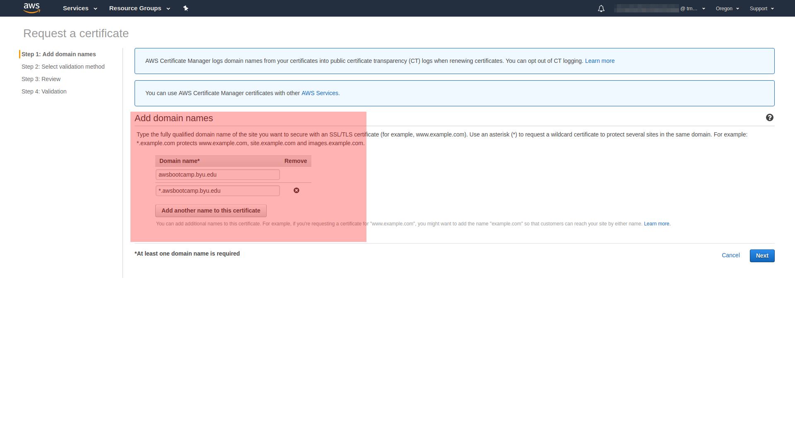
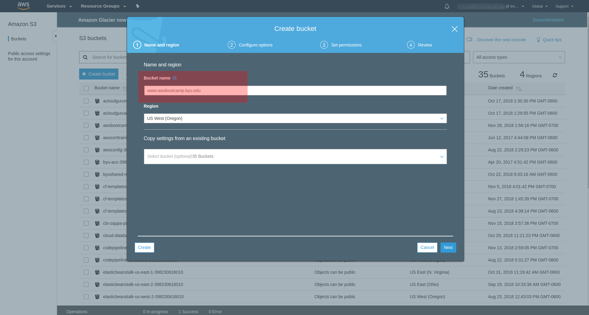

AWS Route 53
Introduction
DNS is a mechanism for translating IP addresses (176.32.103.205) to domain names (amazon.com). In essence, it is a large, distributed lookup table of IP address to domain name mappings. Translation requests are handled by Domain Name Servers; Route 53 is AWS's implementation of DNS.
BYU has authority over a portion of this lookup table - the portion that ends in .byu.edu. The authority over the .edu portion hands off all requests ending with .byu.edu to BYU's domain name servers.
This document steps through gaining authority over a portion of the .byu.edu domain and administering it through Route 53.
Glossary
Hosted Zone
A DNS zone is any distinct, contiguous portion of the domain name space in the Domain Name System (DNS) for which administrative responsibility has been delegated to a single manager. The domain name space of the Internet is organized into a hierarchical layout of subdomains below the DNS root domain. [Wikipedia]
Zone Apex
The naked or root domain in the hosted zone. In this document we are requesting authority over a portion of (or subdomain of) the byu.edu domain. Our zone apex will be awsbootcamp.byu.edu
Subdomain
Once we have authority over the domain awsbootcamp.byu.edu, we also have authority to create subdomains:
eg
www.awsbootcamp.byu.edu
mysite.awsbootcamp.byu.edu
temp.student.awsbootcamp.byu.edu
Record Types
DNS has several record types, we will only focus on a few.
- SOA - Record: A Start Of Authority record is automatically created when we request a Hosted Zone in Route 53. It contains information about the zone.
- A - Record: A direct translation from domain name to an IPv4 IP Address; amazon.com -> 176.32.103.205
- CNAME - Record: An alias from one domain name to another; www.amazon.com -> amazon.com
- Alias: AWS's method of allowing mappings from domain names to the following AWS resources:
- A CloudFront distribution
- An Elastic Beanstalk environment
- An ELB load balancer
- An Amazon S3 bucket that is configured as a static website
- Another Route 53 record in the same hosted zone
TTL - Time To Live
Because of the distributed nature of DNS, it is expensive to make a request. A DNS lookup will hit a number of DNS servers before the authority over the domain name is found and a response can be returned. TTL (Time To Live) is the number of seconds to keep the response in cache before making another request. If we set a TTL of 86400, changes to that DNS record will take up to 24 hours to be reflected across the Internet.
Step 1. Create a Hosted Zone in Route 53
Before BYU begin handing off requests for a portion of their domain, we need to create a Hosted Zone in Route 53 to receive those requests. Creating a Hosted Zone does NOT give us authority over it - the authority is granted by the owner of the parent domain. In Step 2, we will request that authority.
- To check that the domain we are requesting authority over is not currently in use, we go to the Windows Command Prompt (or Terminal on Mac/Linux) and enter the command nslookup awsbootcamp.byu.edu. This will perform a name server look up for our desired domain.
- Log in to the AWS console and go to Route 53
- Create a Hosted Zone
- Copy the list of Name Servers; we'll need them for Step 2
Step 2. Request Hostname Registration
- Go to the Service Catalog https://it.byu.edu/byu/byu_service_catalog_2.do and log in.
- Search for
Hostname Registration
- On the Hostname Registration page, choose
Hostname Registration from the Order|Modify dropdown.
- Fill in the form as shown. Enter the desired Domain Name in the DNS Name field, and the list of Name Servers (from Step 1) in the IP Address field..

- Wait... Time passes... Once our registration is complete (this is a manual process, and may take a day), we become the authority over our domain (and any subdomains we create) and can administer it through Route 53.
Step 3.a. EC2 - Simple Web Server
This is a trivial setup because our EC2 instance already responds directly to calls to its IP address. All we need to do is create a DNS mapping from our EC2 instance's IP address to a domain name.
- Note the IPv4 Address of the EC2 instance - in this case 34.210.88.165
- In our Hosted Zone within Route 53, click
Create Record Set. Create an A Record with a name and the IP address of our EC2 instance. (If the name is left blank, the naked domain name will be mapped to the EC2 instance.)
- Visit the site by typing the new domain name (ec2.awsbootcamp.byu.edu) into our browser address bar.
Step 3.b. Elastic Load Balancer with HTTPS
If we want our web server to be more secure and resilient, we can place it behind an Elastic Load Balancer.
AWS also makes it easy to add an SSL Certificate and serve our site over HTTPS without the need to import Certificates onto our EC2 instance, or change Apache configuration files.
- Create an Elastic Load Balancer (ELB) and configure it to listen for HTTPS (port 443) traffic.
- HTTPS traffic requires that we configure an SSL Certificate - which we will do using AWS Certificate Manager (ACM).

-
AWS Certificate Manager (ACM)
- Add the domain names we want our certificate to cover. As we do not know all of the subdomains we may need, we will add the naked domain plus a wildcard domain. This means our certificate will cover awsbootcamp.byu.edu along with any subdomains (eg www.awsbootcamp.byu.edu, mysite.awsbootcamp.byu.edu, etc)

- Choose DNS validation - when creating a certificate, the certificate athority (CA) needs to validate that we own (or have access to) the domain the certificate covers.
- Review and click the
Confirm and request button.
- Select the small arrow next to the apex domain name and click the
Create record in Route 53 button.
- Create the record
- Wait... Time passes... After about 5 minutes, our status will change to
Issued and our certificate is all set to go.
- Back in our ELB setup, we might need to click the little refresh arrows next to the
Certificate name dropdown, but our new certificate should now be available. Now we finish setting up our ELB; add a target group, place our EC2 instance within the group, etc (this is outside the scope of this document, but isn't too difficult)
- In Route 53, add an apex zone alias to our ELB. (Our load balancer should be selectable in the
Alias Target field - if it isn't, refresh the Route 53 page.)
Our EC2 instance will now be available at the url https://awsbootcamp.byu.edu
- We can then add a CNAME record that aliases www.awsbootcamp.byu.edu to awsbootcamp.byu.edu - enabling both URLs to respond to requests.
- To redirect any traffic that attempts to reach our site via HTTP (port 80), add a second listener to our ELB for port 80, and have it redirect all traffic to HTTPS (port 443).
- Our Bacon Ipsum site is now encrypted in transit as it is routed across the Internet to our users. Mmmm, secure bacon.
Step 3.c. S3 - Static Website
For a static website - a site that does not require any processing on the server side - an S3 bucket is a cheap and scalable option.
In order to use our own domain URL to access a static website in an S3 bucket, we MUST give our bucket the same name as the domain. We cannot use a CNAME record to alias the AWS assigned S3 URL.
- Create a bucket named awsbootcamp.byu.edu
- Create an apex zone alias to the bucket in Route 53. (if the bucket does not appear in the
Alias Target dropdown, refresh the page and try again)
- Create a bucket named www.awsbootcamp.byu.edu. We don't need to add anything to this bucket, we can simply set it to redirect traffic to the awsbootcamp.byu.edu bucket.

- Create a subnet alias to the bucket in Route 53. (if the bucket does not appear in the
Alias Target dropdown, refresh the page and try again)
- Voila, a running website in S3 that responds to both http://awsbootcamp.byu.edu and http://www.awsbootcamp.byu.edu

Step 3.d. Elastic Beanstalk
Setting up an Elastic Beanstalk is outside the scope of this document, due to the variation in components and features that a Beanstalk can consist of.
Once set up, routing our domain to our beanstalk is a matter of using an Alias in Route 53. Adding HTTPS access will depend on the components of our beanstalk.
- Create an apex zone alias to our Beanstalk.

- Create a CNAME mapping from www.awsbootcamp.byu.edu to awsbootcamp.byu.edu

{kind=link}
{kind=link}
{kind=link}
{kind=link}
{kind=link}
{kind=link}
{kind=link}
{kind=link}
{kind=link}
{kind=link}
{kind=link}
{kind=link}
{kind=link}
{kind=link}
{kind=link}
{kind=link}
{kind=link}
{kind=link}
{kind=link}
{kind=link}
{kind=link}
{kind=link}
{kind=link}
{kind=link}